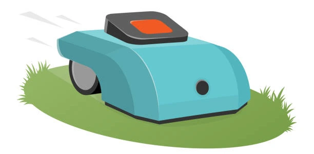

Robotic Lawn Mower
A smart home assistant that gives you the perfect lawn all day long. Ideal for a small yard of less than half an acre of grass. Fully automatic: the mower itself will determine the boundaries of the grass area, charge itself and mow the lawn according to the schedule that you set in the mobile application. Attention to safety: if your child or pet comes close to it, the lawnmower will turn off.
Artificial Intelligence Eco-friendly Full Automation Mulching